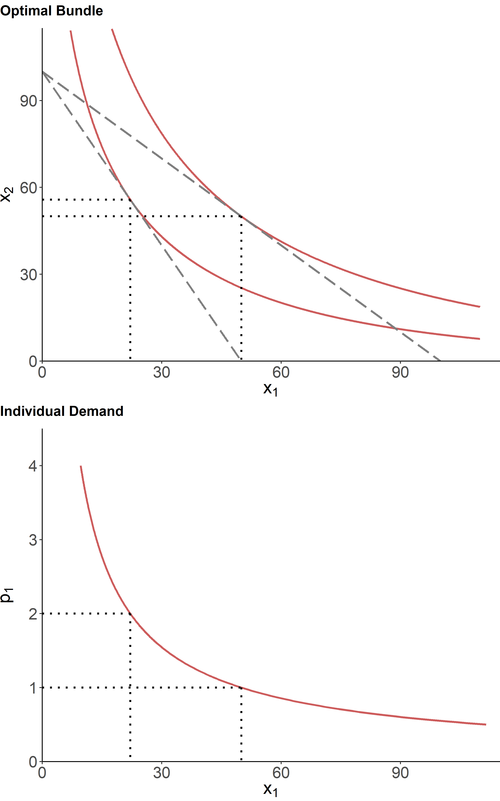

Tomek and Kaiser (2014, chap. 2 & 3)
Norton, Alwang, and Masters (2022, chap. 3)
A consumer, in their everyday life, faces an array of choices. These choices are typically related to their needs. For example, in the morning, because a consumer has the need for calories, their array of choices for breakfast include cereal, eggs, yogurt, fruits, etc. During the workday, because a person needs to commute to work, their array of choices include train, but, car, bicycle, or some combination thereof.
Ideally, a consumer would want to satisfy all of these needs, but they are usually constrained by their disposable income—the budget allocated for purchasing goods. The objective of a consumer, then, is to select a subset of goods that best satisfy their needs, subject to their budget constraint.
Economists define “best” in terms of a consumer’s attempt to maximize their utility. Utility is an economic term describing an individual’s feeling about something; in this case the feeling linked with the consumption of goods. While it is a unit-free measure, in general, more utility is better than less utility, and positive utility is “good” and negative utility is “bad.”
Mathematically, for a set (or a basket) of goods, \(\mathbf{x}=(x_1,\ldots,x_n)'\), the utility approach to the theory of demand is given by: \[\max U(\mathbf{x}),\;~~s.t.\;~\mathbf{p}'\mathbf{x} \leq M,\] where \(\mathbf{p}=(p_1,\ldots,p_n)'\) is a vector of prices for the given set of goods, and \(M\) is the total disposable income (i.e., the budget). Thus, a consumer tries to attain the maximum utility they can afford, given their income and the prices of goods. The following graph illustrates this for a two–goods scenario.
Figure 1.1: Individual Choice and Demand
Market determines prices of goods—i.e., a consumer has no control over the prices. Changes to prices affect a consumer’s decision–making. A consumer can afford and, typically, will purchase more of the same good as the price of the good drops. This is known as the substitution effect. The substitution effect is always inversely related to the price change.
Moreover, a decrease in price of a good, in effect, is equivalent to an increase in income—a consumer can afford more of all goods with the same amount of money. This is known as the income effect. The income effect, usually (but not necessarily), is inversely related to the price change.
Thus, a price drop will typically increase the quantity demanded due to the income effect as well as the substitution effect.
For some goods, real income and demand are inversely related. This is equivalent to the negative income effect due to price decrease. Such goods are called inferior goods. For inferior goods, the income and the substitution effects have opposite signs.
At the extreme, the income effect might outweigh the substitution effect, resulting in a positively sloped demand curve. This is known as Giffen’s paradox, and such goods are referred to as the Giffen goods. It might occur, for example, when a staple commodity, such as rice, constitutes a large portion of consumer’s expenditures.
We obtain aggregate or market demand when we add up (horizontally) individual consumer demand functions. Market demand is a schedule of product quantities that all consumers in a market are willing to purchase at given prices, everything else held constant. Normally, the demand curve is downward sloping, which is inferred in the law of demand.
Own price of the good is a sole factor affecting the quantity demanded, which results in movement along the demand curve. All other factors may influence demand by shifting the demand curve. These factors can be economic (e.g., prices and availability of other goods and services, income and its distribution); demographic (population size and its distribution by age, gender, ethnicity, etc.); tastes and preferences (influenced by information and advertising, lifestyle, etc.).
The responsiveness of quantity demanded to a price change—known as the own–price elasticity of demand (demand elasticity)—may vary from product to product, over time, and across locations. For example, quantity of salt purchased will not vary greatly due to the price change, but quantity of bananas purchased will likely be more responsive to price changes. From the consumers’ standpoint: bananas have substitutes, but salt doesn’t. As another example, quantity of rice purchased is likely to be less responsive to price changes in Asian countries, where it is considered a staple food, than in the Western world, where rice is viewed more as a side dish, perhaps with more substitutes.
Mathematically, price elasticity is given by: \[\epsilon = \frac{\partial Q}{Q}/\frac{\partial P}{P},\] where \(\partial\) denotes an infinitesimal change. Note that \(\frac{\partial X}{X} \equiv \%\Delta X\), and so price elasticity is defined as the percentage change in quantity relative to the percentage change in price. That the elasticity is measured in relative (or percentage) terms, makes it an attractive measure as it facilitates a direct comparison between goods with possibly different units of measurement of quantities and prices.
The foregoing equation can be rewritten as: \[\epsilon = \frac{\partial Q}{\partial P}\frac{P}{Q},\] where \(\frac{\partial Q}{\partial P}\) is the slope of the demand curve. Because of the downward-sloping demand curve, the price elasticity measure ranges from zero to negative infinity. This range consists of inelastic (\(|\epsilon_{ii}| < 1\)) and elastic (\(|\epsilon_{ii}| > 1\)) segments, with \(|\epsilon_{ii}| = 1\) representing the unitary elastic case.
For most functional forms, including the linear demand, the elasticity coefficient varies along the demand curve. Exceptions are if demand is represented by a straight horizontal line, a straight vertical line, a power function, and a rectangular hyperbola. In general, however, demand for different goods is usually categorized as elastic or inelastic.
The responsiveness of the demand for a good \(i\) to a price changes of a related good \(j\) is known as the cross–price elasticity of demand (cross–price elasticity). Mathematically, cross-price elasticity is given by: \[\epsilon_{ij} = \frac{\partial Q_i}{Q_i}/\frac{\partial P_j}{P_j},\] or, alternatively: \[\epsilon_{ij} = \frac{\partial Q_i}{\partial P_j}\frac{P_j}{Q_i}\]
Three types of relationships—which are related to the substitution effect—can be identified depending on the sign of cross-price elasticity: for substitute goods, \(\epsilon_{ij} > 0\); for complement goods, \(\epsilon_{ij} < 0\); and for independent goods, \(\epsilon_{ij} = 0\)
Note that the price change also facilitates the income effect. If the income effect outweighs the substitution effect, we might observe a negative relationship between the demand for product \(i\) and the change in price of product \(j\), even when the two are substitutes. To the extent that the expenditure share of a given good is a small fraction of the disposable income, the substitution effect will typically dominate the income effect.
The responsiveness of the demand for a good to income changes is income elasticity of demand (income elasticity). Mathematically, income elasticity is given by: \[\epsilon_{m} = \frac{\partial Q}{Q}/\frac{\partial M}{M},\] or, alternatively: \[\epsilon_{m} = \frac{\partial Q}{\partial M}\frac{M}{Q}\]
In most cases, the income elasticity of demand has a positive value: as income increases, consumers tend to buy more of most products. However, income elasticities tend to decline as incomes increase. In general, demand is thought to be a nonlinear function of income. In practice, expenditures (rather than income) are often used to estimate “income” elasticities.
Page built: 2022-08-08 using R version 4.1.2 (2021-11-01)